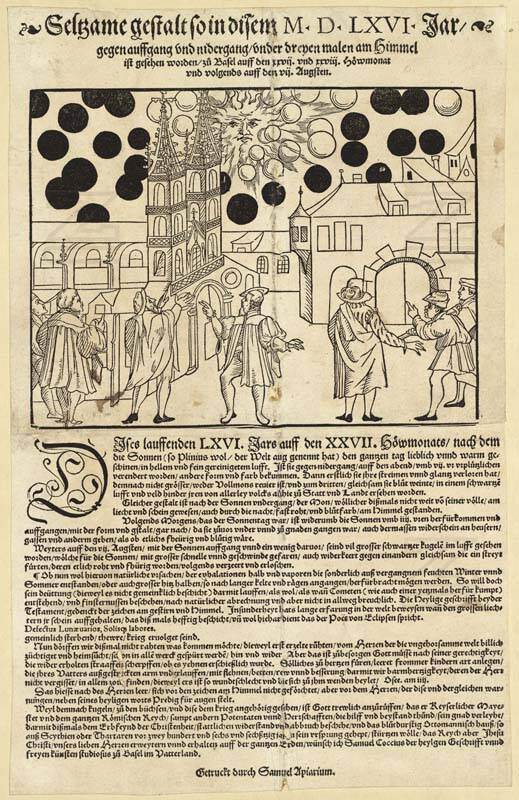

Basel sky spheres
Basel, Switzerland, 1566

A 1566 pamphlet by Samuel Coccius reported that on July 27 and 28 and August 7, people in Basel saw a blood-red sun and moon and, before the rising sun, many red and black balls that seemed to fight. Coccius presented it as a religious sign; some ufologists read it as a battle between UFOs. Historians and meteorologists have discussed natural explanations, and many 15th- and 16th-century leaflets reported similar "sky spectacles." 1
Open in the interactive Watcher
Sources
- 1566 celestial phenomenon over Basel Wikipedia